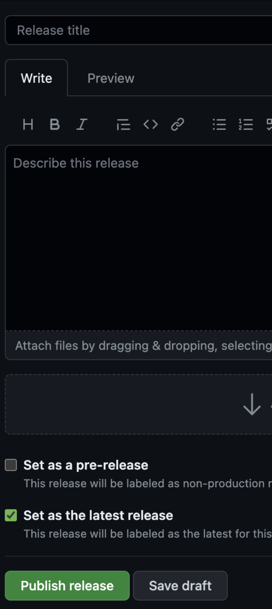

Create a draft release for testing purposes
Intro
There are a number of core charts in HMCTS that will have an effect on upstream users so its difficult to make changes without causing unexpected outcomes.
To mitigate this there is the option to create pre-release which allows you to create the required changes, build via the existing methods and deploy via Flux as normal, this guide will show how this can be carried out without impacting others.
For this guide I will be using the chart-Library which is the most central repository to all Helm charts as it contains all templates for the project: link
The following steps cover what will be shown in this guide:
- Clone the repository, create a branch for your work
- Make your changes locally and commit when ready
- Push to Github so it exists remotely
- Create a pre-release with your branch as the source and a new tag
- Monitor Azure DevOps pipeline to ensure everything completes successfully
- Update upstream chart to make use of the pre-release for testing purposes
Clone the repository, create a branch for your work, make changes and commit and finally push to Github This is a well documented area so I will be linking to existing documentation for some steps:
Make your desired changed to the code locally, you can see which files have changed by running git status
When ready to commit your changes you can following these steps to commit and push your code:
📣 NOTE: You should NEVER push to main/master as shown in the link and all repositories should have protection to stop this. Once all of these steps are complete you are ready to create a pre-release.
Create a pre-release with your branch as the source and a new tag
In Github navigate to the repository, you should see a releases section on the main page:
{kind=link}
Click on releases to show all releases for this repository so far, take note of the most recent release version number as we will need this later.
At the top of the new page you will see the option to draft a new release and you should click this:
{kind=link}
Release details
The release page requires some specific details, the most important is the target, this is your branch containing your changes and should be selected here. For the Tag drop down, you need to create a new tag for your work, using the most recent version number we can create a new tag e.g. v2.1.2-alpha (we add alpha here because 2.1.2 would be the final tag when your work is completed and alpha tells others this is still in progress).
{kind=link}
For the Title you can use the tag again and you can ignore the description as this is only required for the final release to allow users to know what changed. The final and very important change is to select the check box for Set as a pre-release this option ensures that the release does not trigger anything upstream and is not picked up by Renovate for updates to upstream charts or services.

Once complete and all settings are in place you can publish the release. When the release is published it will appear on the releases page with the tag you supplied:
{kind=link}
Monitor Azure DevOps pipeline to ensure everything completes successfully
Once the release has been completed it will trigger the Azure DevOps pipeline to build the release. For Chart-Library this pipeline is an example of a pre-release build: link You can see the branch/tag being used by ADO is an alpha version:
{kind=link}
Update upstream chart to make use of the pre-release for testing purposes
If the build completes successfully there is now a version of your changes available for testing. In my example here I can update one of the base charts that depend on the Chart-Library to use my new version:
{kind=link}
Summary
This is the process to create a single pre-release for a single repository and this can ensure I do not impact any teams or services whilst still getting the benefits of all test and build processes that already exist.
Additional
In my case I am now able to test my templates on a chart using the Helm template command without needing to deploy the chart.
If your changes are being made on a chart itself you can use the new version of the chart you’ve just released as a version within Flux to deploy it to AKS.
To find the new version the HMCTS Public repository you can search the HMCTS Public repository via Helm.
Check you’ve got the repository installed using the list command:
╰─$ helm repo list 130 ↵
NAME URL
hmcts-public https://hmctspublic.azurecr.io/helm/v1/repo/
If not you’ll need to install it first:
helm repo add hmcts-public https://hmctspublic.azurecr.io/helm/v1/repo/
Once installed you can now search the repository for the chart you’ve built an alpha version of:
helm search repo hmcts-public/nodejs -l --devel
This will search your Helm repos for the nodejs chart listing all available versions including development versions i.e. those containing the alpha build created in this guide.
╰─$ helm search repo hmcts-public/nodejs -l --devel
NAME CHART VERSION APP VERSION DESCRIPTION
hmcts-public/nodejs 3.0.3-alpha.5 3.0.3-alpha.5 A Helm chart for HMCTS nodejs apps
hmcts-public/nodejs 3.0.3-alpha.4 3.0.3-alpha.4 A Helm chart for HMCTS nodejs apps
hmcts-public/nodejs 3.0.3-alpha.3 3.0.3-alpha.3 A Helm chart for HMCTS nodejs apps
hmcts-public/nodejs 3.0.3-alpha.2 3.0.3-alpha.2 A Helm chart for HMCTS nodejs apps
Once you’ve got the version number from the repository you can add this to Flux for the environment you wish to test your changes. This is an example of the plum-frontend app using a chart version based on the above alpha build version numbers:
---
apiVersion: helm.toolkit.fluxcd.io/v2beta1
kind: HelmRelease
metadata:
name: plum-frontend
spec:
chart:
spec:
version: 3.0.3-alpha.5
values:
nodejs:
ingressHost: plum.sandbox.platform.hmcts.net
Commit, push, PR and have your changed reviewed and merged into the Flux repository and Flux will deploy the new chart version to the AKS cluster as normal.